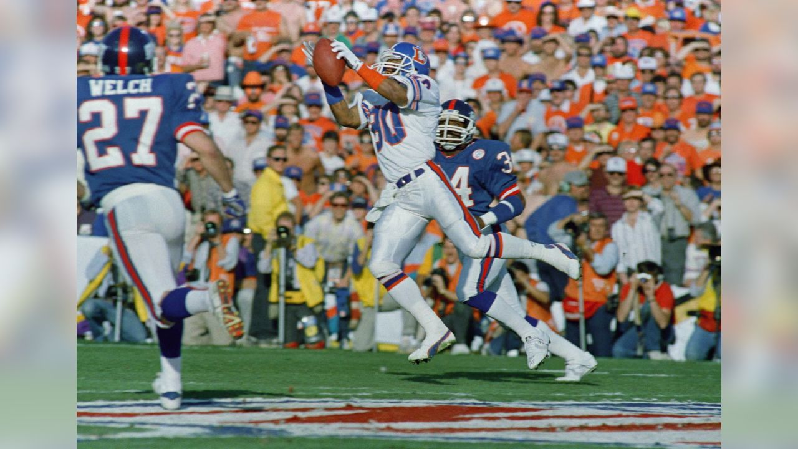
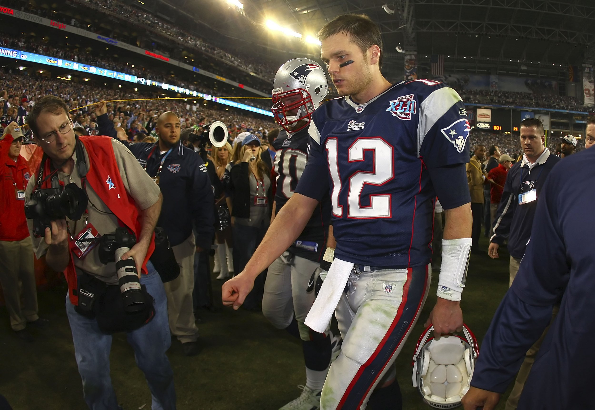
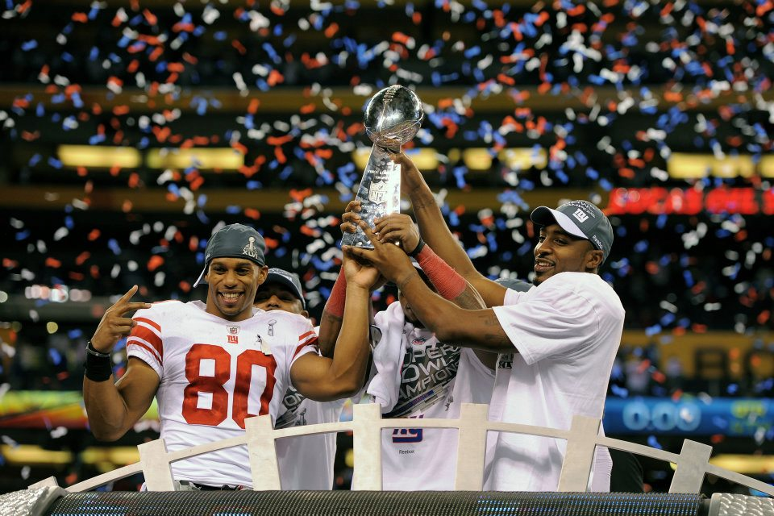

What are the New York Giants?

The New York Giants are a team in which...
Giants Superbowl Wins
-

1. Superbowl XXI (1987)
The 1986 Giants capped an outstanding season with a commanding 39–20 victory over the Denver Broncos in Super Bowl XXI, a game that etched names like Phil Simms and Lawrence Taylor into Giants lore. Simms, who completed an astonishing 22 of 25 passes — one of the most efficient performances in Super Bowl history — carved up Denver’s secondary with precision and calm. Taylor, relentless as ever, anchored a defense that forced turnovers and applied constant pressure, limiting John Elway’s impact. A defining moment occurred when Simms connected with tight end Mark Bavaro and wide receiver Lionel Manuel for crucial gains in the fourth quarter, turning a close contest into a decisive advantage. By game’s end, the Giants’ balanced attack and stifling defense left no doubt: this was a team built for big moments.
-

2. Superbowl XXV (1991)
In a contest defined by tension and attrition, the Giants eked out a 20–19 win over the Buffalo Bills in Super Bowl XXV, showcasing grit under pressure. The slow, methodical offense orchestrated by Jeff Hostetler — stepping in for an injured Phil Simms — controlled the clock and kept the explosive Bills offense on the sidelines. Giants running back Ottis Anderson powered the ground game, grinding out tough yards and earning Super Bowl MVP honors. The defense, led by Lawrence Taylor and Michael Strahan, bent but rarely broke, forcing Buffalo into difficult situations. The final chapter of this game will forever be linked to Bills kicker Scott Norwood’s missed 47‑yard field goal attempt, wide right, with seconds remaining — a moment that epitomized the razor‑thin margin between victory and defeat.
-

3. Superbowl XLII (2008)
In one of the greatest upsets in NFL history, the underdog Giants stunned the previously undefeated New England Patriots 17–14 in Super Bowl XLII, a game that hinges on one of the most iconic plays in football lore. With the Patriots threatening to extend their dominant run, Eli Manning escaped a near sack and delivered a miraculous 32‑yard strike to David Tyree, who pinned the ball against his helmet in what instantly became “The Helmet Catch.” That play flipped momentum and set up Plaxico Burress’s game‑winning touchdown reception in the final minute. Giants defenders like Mathias Kiwanuka and Michael Strahan disrupted New England’s rhythm throughout, but it was Manning’s poise — especially in crunch time — that defined this triumph, preserving its place among the most dramatic finishes in Super Bowl history.
-

4. Superbowl XLVI (2012)
Four years later, the Giants again faced the Patriots and emerged with a 21–17 victory in Super Bowl XLVI, reinforcing their reputation for late‑game magic. Eli Manning, again at the helm, engineered key scoring drives, including a pivotal 38‑yard completion to Hakeem Nicks that swung momentum and kept New England’s vaunted defense on its heels. The Giants’ relentless running back Ahmad Bradshaw punched in the decisive touchdown late in the fourth quarter, while the defense, led by players like Corey Webster, forced timely stops and turnovers. Even as the Patriots mounted their own comeback attempts, the Giants remained composed, sealing the win through balanced execution and calculated aggression. This victory reaffirmed New York’s knack for rising when it mattered most against their perennial rivals.
| Date | Opponent | CMP% | YDS | TD | INT | Rating |
|---|---|---|---|---|---|---|
| Jan 4 | vs Cowboys | 68.8 | 230 | 2 | 0 | 110.2 |
| Dec 28 | @ Raiders | 73.3 | 207 | 0 | 0 | 91.9 |
| Dec 21 | vs Vikings | 53.8 | 33 | 0 | 1 | 27.4 |
| Dec 14 | vs Commanders | 55.6 | 246 | 2 | 1 | 83.8 |
| Dec 1 | @ Patriots | 70.8 | 139 | 1 | 0 | 99.1 |
| Nov 9 | @ Bears | 65.5 | 242 | 0 | 0 | 91.5 |
| Nov 2 | vs 49ers | 72.7 | 191 | 2 | 0 | 107.0 |
| Oct 26 | @ Eagles | 58.3 | 193 | 1 | 0 | 98.1 |
| Oct 19 | @ Broncos | 45.5 | 283 | 3 | 1 | 93.4 |
| Oct 9 | vs Eagles | 68.0 | 195 | 1 | 0 | 104.6 |
| Oct 5 | @ Saints | 65.0 | 202 | 2 | 2 | 73.1 |
| Sep 28 | vs Chargers | 65.0 | 111 | 1 | 0 | 96.0 |